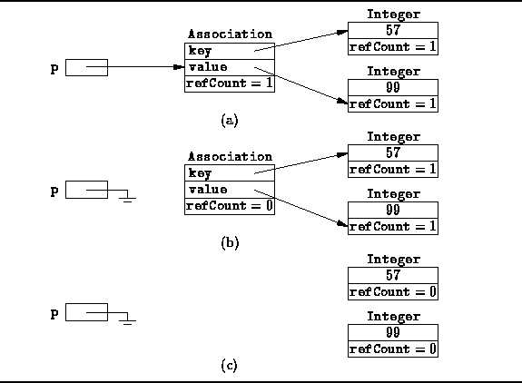

Data Structures and Algorithms
with Object-Oriented Design Patterns in Java
Data Structures and Algorithms
with Object-Oriented Design Patterns in Java
The Integer objects considered in the preceding examples
are very simple objects--they contain no references to other objects.
Reference counting is an ideal strategy for garbage collecting such objects.
But what about objects that refer to other objects?
For example, consider the Association class described in Chapter  which represents a pair.
We can still use reference counting,
provided we count all to an object
including references from other objects.
which represents a pair.
We can still use reference counting,
provided we count all to an object
including references from other objects.
Figure (a) illustrates the contents memory following
the execution of this statement:
Object p = new Association (new Integer (57), new Integer (99));The reference count of the Association is one, because the variable p refers to it. Similarly, the reference counts of the two Integer instances are one because the Association refers to both of them.

Figure: Reference counting when objects refer to other objects.
Suppose we assign the value null to the variable p.
As shown in Figure (b),
the reference count of the association becomes zero--it is now garbage.
However, until the Association instance continues to exist until
it is garbage collected.
And because it still exists, it still refers to the Integer objects.
Figure (d) shows that the garbage collection process
adjusts the reference counts on the objects to which the association refers
only when the association is garbage collected.
The two Integer objects are now unreferenced
and can be garbage collected as well.
 Copyright © 1998 by Bruno R. Preiss, P.Eng. All rights reserved.
Copyright © 1998 by Bruno R. Preiss, P.Eng. All rights reserved.